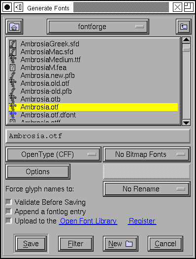
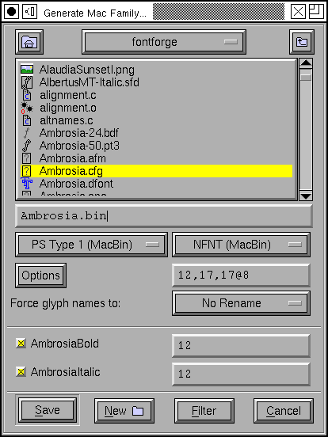

Generate Font Dialog¶
This generates font files, both outline and bitmap. You may choose not to generate either, you may generate an afm file or a pfm file, you may select the type of postscript output, you may select which pixelsizes of bitmap to generate.
The outline types are:
PostScript Type1 font, binary format (a .pfb file, this may be used by most modern windowing systems)
PostScript Type1 font, ascii format (a .pfa file, this is used by printers)
PostScript Type1 font, macbinary format (a postscript font wrapped up in a set of mac resources wrapped up in a macbinary file, to be copied to a mac, unmacbinaried, and installed there)
If you are on a mac then a resource fork will be generated directly, macbinary will not be used.
Note
The mac will not recognize a PostScript font unless you also generate a bitmap font in NFNT format and place it in the same directory. If you haven’t created any bitmap fonts yet, cancel this dlg and use Element->Bitmaps Available to generate a bitmap font, and then retry this dlg.
Warning
Apple implies that this format is deprecated and therefore it may not work in future versions.
Multiple Master(A), generates a multiple master font in ascii format (same as .pfa)
Multiple Master(B), generates a multiple master font in binary format (same as .pfb)
Multiple PostScript Type 1 binary fonts (this is used to convert a large font with a two byte encoding into a series of smaller pfb (or pfa) files with 256 glyphs in each. You may be prompted for a file to specify the conversion. See the ttf2tfm man page for a description of these SUBFONT DEFINITION FILES. Here is an example of what the file should look like)
PostScript Type3 font (a .pt3 font, this is also used by printers and is not encrypted)
PostScript Type0 font, this is only available if you have a font encoded with Unicode or one of the CJK encodings. Type0 fonts can have up to 65536 glyphs in them (as opposed to 256 for Type1s and Type3s).
PostScript Type42 font (this is really a TrueType font wrapped up in PostScript)
PostScript Type11 font (this is another format for wrapping a TrueType font in PostScript, it is a CID format)
PostScript CID font, this is only available if your font is a CID font. This produces a font in the old Type1 CID format. You probably want to use the OpenType CID format…
PostScript CFF font, this is the format that lives inside the ‘CFF ‘ table of an opentype font. It is a valid font format in its own right.
True Type.
True Type Symbol. Same as True Type, except it uses the 1 byte encoding given in the font. This is important on windows as symbol and dingbat encodings often include characters (in the range 0x80-0x9f) which aren’t mapped in normal encodings. It is important on the Mac because I do not generate the correct encoding tables for any script other than MacRoman, so if you want a MacCyrillic font use this mode.
True Type macbinary format, a truetype font wrapped up in a mac resource, wrapped up in a macbinary file. Designed to be used for a mac.
If you are on a mac, then a file with a resource fork will be generated directly (macbinary will not be used).
True Type dfont format, a truetype font wrapped up in a mac dfont (data fork resource file). Mac OS/X font.
OpenType (CFF). Officially OpenType includes True Type, but OpenType True Type fonts are no different from plain True Type fonts, so they might as well just be called True Type. So here when I say OpenType I mean OpenType with a CFF PostScript Type 2 font inside it.
OpenType dfont format, an OpenType font wrapped up in a mac dfont (data fork resource file). Mac OS/X font.
OpenType CID, This is only available if your font is a CID font. It produces an OpenType CID-keyed font.
None
The bitmap types are:
BDF – The internal bitmap fonts will be saved in bdf format. You may only select sizes for which you have already generated fonts (you may output anti-aliased (greymap) fonts as well as bitmaps. A 12pixel high greymap font with 8 bits/pixel can be represented as 12@8).
In TTF/OTF – Store the bitmap fonts inside the ttf (or otf) file (the exact format will depend on the settings of the Apple and OpenType bits in the Options dlg).
Apple bitmap only sfnt (dfont) – Only available if no outline font is generated. Apple allows bitmaps to be stored within a truetype file (sfnt) even if there is no outline font. So this generates a ttf file that just contains bitmaps and wraps it up in a dfont.
(faked) MS bitmap only sfnt (ttf) – Microsoft does not support a bitmap only format for an sfnt, but this option attempts to fake one as best it can.
X11 bitmap only sfnt (otb) – this is the new X11 bitmap format with bitmaps embedded in an sfnt wrapper (an opentype or truetype font) but with no outline data.
NFNT (MacBin) – Converts the bitmap fonts into Macintosh NFNT resources and wraps them up in a mac binary file.
NFNT (Resource) – On a mac the NFNT font will be generated in a resource fork directly.
Note
Mac OS/X appears not to support NFNT bitmaps (at least I can’t get them to work). However, the mac still needs at least one NFNT in order to find an type1 font. Even though the bitmap is required, it will not be used. Odd.
Windows FON – Windows resource based font format.
Windows FNT – Windows format, one bitmap font per file.
Palm fonts – support for various palm bitmap font formats.
PS Type3 Bitmap – create a PostScript Type3 font which uses the imagemask operator to display each glyph’s bitmap.
None
The options dialog provides the following check boxes. Not all are enabled at all times.
[] Round – Round all coordinates to integral values. If this is not checked then Type1 fonts will be output with 2 decimal digits of precision, and Type2 fonts with 16 binary digits (~4 decimal digits) when needed.
[] Hints – Include PostScript hints in the output file
[] Flex Hints – Include PostScript flex hints in the output file
[] AFM – Generate an adobe font metrics file (controls generation of .amfm files for multiple master fonts too)
Note
Normally only ‘liga’ and ‘rlig’ ligatures will be output in the AFM file. But you can control that in the lookup dialog off of Font Info.
[] Composites in AFM – the AFM format includes a mechanism for building composite glyphs out of components. It is roughly equivalent to the OpenType mark-to-base feature. Almost nobody uses these data, and they can increase the size of an AFM file enormously, but if you would like them check this box (if your font does not include any anchor classes, this will have no effect).
[] PFM – Generate a windows printer font metrics file
[] TFM – Generate a TeX font metrics file (and a TeX enc encoding file)
[] Hints – Include truetype hints in a truetype font.
R C van Dalen’s truetype hinting utilities may be helpful here.
[] PSNames – Include the full ‘post’ (postscript name) table in the font
[] Apple – Apple and MS/Adobe disagree on the format of a ttf font. This is annoying. Checking this box means the font will be generated according to Apple’s desires, leaving it unchecked means according to MS/Adobe’s desires. Currently this controls:
The bitmap tables (Apple calls it ‘bdat’, MS/Adobe ‘EBDT’. The data in them are the same)
The PostScript name in the ‘name’ table (Apple says there must be either 0 or 1 of them, MS/Adobe say any value other than 1)
Apple and MS/Adobe also differ on the way references (components) are scaled. Luckily there is another way to disambiguate this case (and references are rarely scaled anyway).
The GDEF, GPOS, GSUB and prop, lcar, kern, opbd, morx, feat tables. Apple does not support GPOS/GSUB tables. MicroSoft still supports kern tables for some fonts but requires GPOS for others.
[] OpenType – If this is checked the font will be generated with the tables used by OpenType. If both this and [] Apple are checked the font will have two sets of tables, Apple will look at one set, and everyone else will look at the other.
Note
The above statement was true up to 10.4 (“Tiger”) after 10.4, Apple can use a few OpenType features.).
[] Old style ‘kern’ – If this is checked along with OpenType then both an OpenType ‘GPOS’ and an old style ‘kern’ table will be generated (assuming there are any kern pairs, of course). The OpenType mailing list considers this a bad idea (some applications may add the kerning values from both tables they say), but it may be helpful for applications which don’t support ‘GPOS’ kerning.
[] Dummy DSIG – On MS Windows, a font with extension “ttf” will be marked with an OpenType icon if it contains a ‘DSIG’ table. FontForge can’t generate a useful ‘DSIG’ table, but it can generate a useless, empty and valid one.
[] Save Comments – I have added my own table (‘PfEd’) in the truetype format in which I can store whatever data I want. Checking this box saves all the glyph comments into the output file.
[] Save Colors – Save the glyph colors in the ‘PfEd’ table as well.
[] Lookup Names – Preserve lookup, lookup subtable and anchor class names in the ‘PfEd’ table.
[] Save Guides – Save information about where the font’s guidelines are into the ‘PfEd’ table.
[] Save Layers – Save the background (and spiro) layers into the ‘PfEd’ table.
[] TeX – Save TeX metrics in the ‘TeX ‘ table
[] Output Glyph Map – Output a file (with extension .g2n) mapping TrueType (OpenType) glyph IDs to glyphnames (and possibly to unicode values)
[] Output OFM & CFG – Output metrics files for Omega
[] Output Font Log – if the font contains font log information then write it out into a separate file “FontLog.txt”.
TTF (and OpenType) fonts are usually generated in Unicode encoding, there will also be a tiny macintosh encoding of MacRoman (and a macintosh copy of the unicode encoding) – the exceptions are: KSC5601 and Wansung fonts which will use Wansung, Johab fonts will use johab, JIS208 and SJIS fonts will use SJIS, Big5 will use big5 encoding. Fonts with a “Full Unicode” encoding will have both a 2 byte unicode encoding table and a 4 byte table. OpenType CID keyed fonts will be saved with Unicode encoding.
PostScript fonts are generated in whatever encoding the font is using (except if you take a two byte encoding and generate a Type1 font (rather than a Type0) then only the first few (256) glyphs will be encoded). Type0 does not support a full Unicode (4 byte) encoding.
PS CID (and OpenType CID in the CFF) are saved with no encoding. The encodings live in separate cmap files which are available from adobe (and perhaps other font vendors).
If you save a CID font with a format other than PS CID or OpenType CID, then only the currently displayed subfont will be saved, with the current meaningless glyph ordering (I suppose this is useful if you wish to extract a sub-font from a CID font).
SVG fonts don’t really have the concept of an encoding other than Unicode.
TTF (and OpenType) fonts will produce vertical metrics tables if the font has vertical metrics enabled. PostScript type1 fonts will not produce Metrics2 dictionaries (If someone actually wants this let me know, it can be done, but I get the impression that nobody uses this any more).
On Mac OS/X, when generating a resource font containing a postscript font then the filename textfield will not be present (as the filename is determined by the fontname). You can still select a directory however.
The bitmap sizes must all be present in the font database. AntiAliased fonts can be indicated by following the pixelsize by “@<depth>” (ie. “@8”).
If you are generating a bdf font then you will be prompted for a resolution later.
See the section on namelists for a discussion of the “Force glyph names to” field.
If you leave [] Validate Before Saving checked then FontForge will attempt to validate your font. If it passes then FontForge will save it without bothering you further, but if it fails FontForge will give you the option of reviewing errors and fixing them. It will pop up a validation window.
If you check [] Append a FONTLOG entry then a text area will open up in which you can create a new FONTLOG entry to be appended to the end of the FONTLOG. This will become part of the FONTLOG before it is saved (with [] Output Font Log in the [Options] dialog) BUT you must save the font if you wish to retain this entry in the sfd file itself.
If you generate a TrueType or OpenType font with the OpenType mode set (note: the term “OpenType” means two things, a truetype wrapper around a postscript font, or a set of tables containing typographic information – here the OpenType mode refers to the typographic tables) then FontForge will generate GPOS, GSUB, and GDEF tables. These contain kerning, ligature information, arabic forms data, anchor points, etc.
Apple does not completely support these OpenType layout tables. If you set Apple mode ‘kern’, ‘opbd’, ‘morx’, ‘feat’, ‘lcar’ and ‘prop’ tables may be generated instead. (and a couple of other small differences will appear).
If you set both Apple and OpenType then both sets of tables will be generated. If you set neither, then only the ‘kern’ table will be generated, and it will only contain pair-wise kerning (no kerning classes, no kerning by state machine). This is the kind of kerning available in the original truetype spec (from which both Apple and OpenType have diverged, but which both still support).
Generate Mac Family¶
This brings up a dialog very similar to the generate fonts dialog above, but with a few added fields. Because this dialog is for Mac families, only Mac formats are supported.
Right above the [Save] button is a list of all fonts that FontForge thinks should be included in this family, along with their bitmap info. If you don’t want a font to be in the family simply uncheck its checkbox.
The font styles that are allowed in a family are limited by the capabilities of the mac ‘FOND’ resource which only allows one style of a given type and does not support the concepts of “Light”, “Black” (if there is already a “Bold” style), “Oblique” (if there is already an “Italic” style), etc. Generally FontForge will be able to figure out a font’s style from its fontname, but in some cases you may wish to override this by setting the mac style directly in fontinfo.
As of Mac OS/X 10.6 Apple appears to be deprecating this format and moving toward TTC files (see below).
For information on creating mac font families beyond the capabilities of this dialog look at the FAQ.
Generate TTC¶
A TrueType Collection file can contain many fonts. They need not be all in the same family (though, of course, they can be).
The dialog lists all open fonts, you may choose any of them to go into the ttc file. No especial magic is needed to bind fonts into one family (at least I hope not).
Traditionally ttc files have been used to contain variants of large CJK fonts (where most of the CJK glyphs remain the same across fonts with a few glyphs (often the latin letters) changing). The format allows glyphs to be shared across fonts, which can result in considerable space savings in some collections – but this can also take time.
On the mac, however, ttc files are generally used to contain a font family where there is very little (often no) overlap of glyphs between fonts.
FontForge can produce two kinds of ttc files, the first
([*] Merge tables across fonts) will try to use a single merged
‘glyf’/’hmtx’/’hhea’/’vmtx’/’vhea’ tables for all fonts (and will try to share
other tables if that is possible). The second, with merge tables turned off,
will dump individual fonts into the collection with no attempt to optimize.
FontForge can also produce ttc files which use the CFF font format. The OpenType documentation claims this will not work, but it does seem to on both the Mac and unix/linux.
FontForge is not always able to produce merged tables … this process will fail if:
The selected fonts have different emsizes
Bitmaps are to be included in the collection
More that 65534 glyphs would be needed in the merged table
If you select the CFF format then the private dictionaries must match.
(or something else goes wrong)
SVG fonts¶
SVG (Scalable Vector Graphics) fonts, come in two forms, one corresponds roughly to a PostScript Type1 font, and one to a PostScript Type 3 font.
In the first format a set of contours is specified for each glyph. There is no indication given whether the font should be stroked or filled – that informaton will have inherited from the graphical environment when the font is used on text.
In the second format each glyph may contain the stroke and fill commands needed to draw it.
FontForge usually generates the first format, but for multi layered or stroked fonts it will generate the second format.